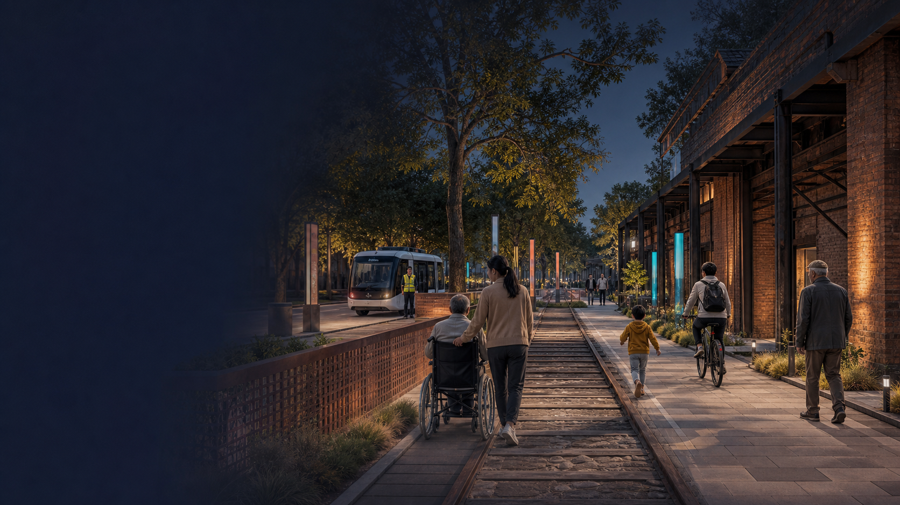
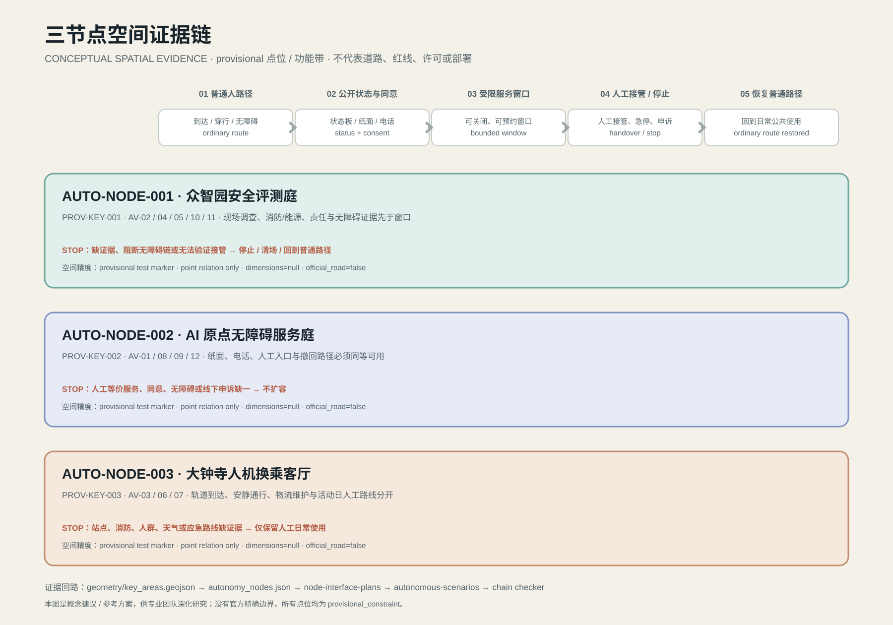

AUTO-NODE-001
众智园
安全评测、仿真、车路云接口与企业服务。先做受管理窗口内的低速接驳/巡检，不把模拟结果当成道路安全证明。
STOP · 识别不确定 / 人流超阈值 / 未获批准
自动驾驶普及后的城市，不以车辆数量证明先进。它先保证 人行、无障碍、路缘、生态和退出权，再允许受限服务进入公共空间。


安全评测、仿真、车路云接口与企业服务。先做受管理窗口内的低速接驳/巡检，不把模拟结果当成道路安全证明。
无障碍接送、人工等价服务、公众解释和退出机制。不会使用 App 的人仍能完成同一件事。
轨道换乘、路缘物流和活动日人机分流。自动驾驶是服务层，不是新增道路容量。

OPEN 公共通行BOOKED 短时接送SERVICE 维护窗口RESTRICTED 风险/活动HUMAN-ONLY 人行优先
状态必须有责任人、时间窗、现场标识和恢复条件，不能被模型永久锁定。
人本安全网 连续无障碍路线、人工服务、物理急停、远程停止、现场广播。
生态/数据安全网 雨雪、热浪、断网回退；暗夜/鸟类保护；数据最小化、公开记录与撤回授权。

| GATE | 要回答的问题 | 最低证据 | 当前状态 |
|---|---|---|---|
| AV-T01 路缘冲突 | 车辆/机器人是否阻断人行、无障碍、消防或装卸秩序？ | 现场计数、事件日志、人工复核 | UNKNOWN |
| AV-T02 等价服务 | 自动化是否让不能用 App 的人失去同一项服务？ | 分层参与测试、人工路线对照、申诉记录 | UNKNOWN |
| AV-T03 回退能力 | 断网、雨雪、热浪、拥挤时能否安全停止并转人工？ | 远程/物理急停、广播、撤离和恢复记录 | UNKNOWN |

专业复核、运营者、居民、无障碍使用者在每个 AUTO-NODE 都必须有一条读数；缺一条即重开。
CONTINUOUSCAUTION ≤ 0.25BLOCKED → REOPEN 普通路线与非 AI 等价服务始终保留；当前 field baseline 仍为 unknown。
这不是质量评分，而是提交包的证据状态：能从文件回读的结构事实，与必须现场测量的性能缺口分开。

盘点无障碍、设置人工服务、登记状态、开放申诉和数据规则。此阶段不需要先部署自动驾驶。
仅在获批窗口内做三道测试门；每月公开聚合事件、责任链和关闭项。
安全、交通、生态、隐私、参与和责任保险全部通过才考虑扩大；否则保留人工服务。


provisional 工作面积、三处重点区、场景卡数量、自动驾驶节点数量和提交包自检结构。源文件、公式与置信度均在 `metrics.json`。
路缘冲突、无障碍连续性、接管时延、车辆性能、雨雪回退、居民体验和生态影响；这些不会被图形或论文包装成实测。
“普及”是情景，不是已证事实。本方案用 2030/2035 作为条件扩展的规划时间窗，不预测渗透率、不假设某家企业，也不把北京其他区域的测试数据迁移到京张。新证据到位后，更新指标、图件、报告和自检，而不是只改标题。
自动驾驶的城市价值不应以取消线下服务来证明。连续人工路线、纸面/电话入口、现场服务和可撤回授权是公共利益的基础设施；任何试点失败都应安全地退回这些路径。
统筹研究范围、总体设计范围和三处重点区由 provisional 边界、节点和公共轴共同回读。
用地、建筑规模、拆改留、更新清单与分期只作为待官方边界复算的设计结构。
步行/轮椅/骑行主链、蓝绿回退、路缘状态、12 张 AI 场景卡和人工服务构成同一套系统。
site_area_sqm · green_ratio · public_space_ratio 均从提交包回读；指标状态与来源在 JSON 账本中公开。